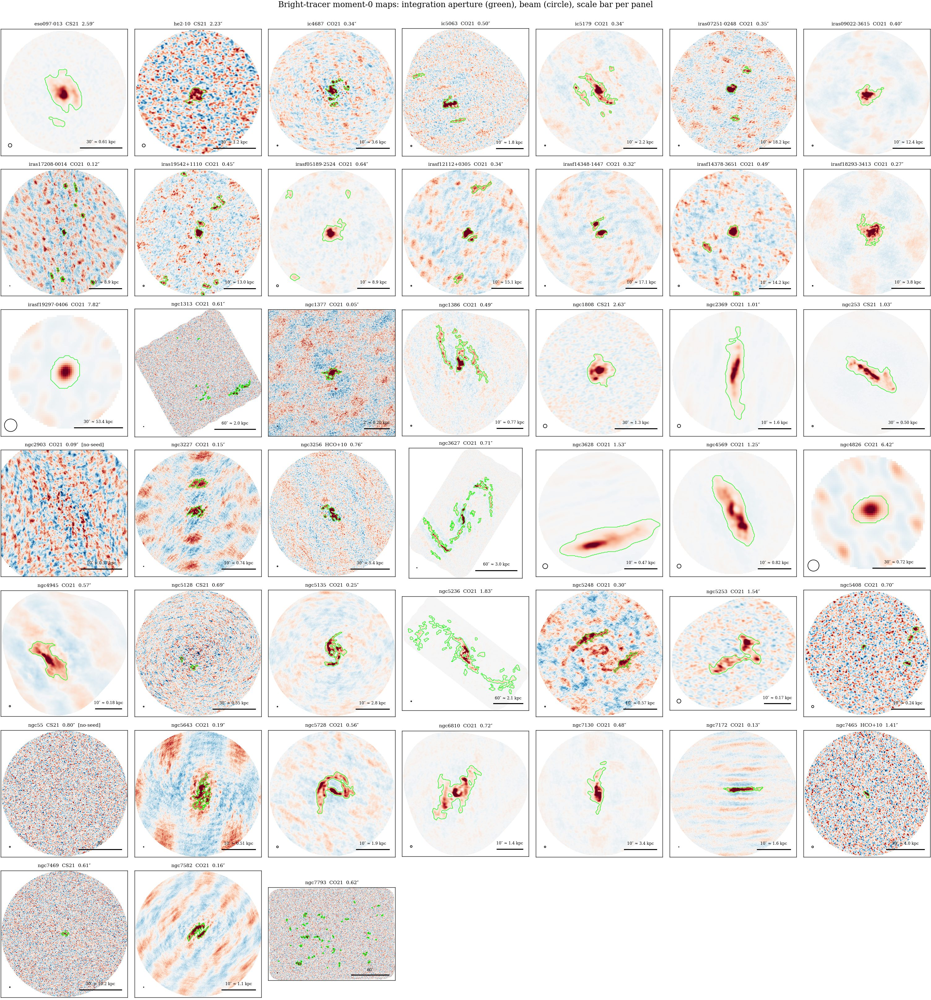

Step 4 — Aperture construction and flux measurement
Step 4 — Aperture construction and flux measurement
This is the heart of the survey: one frozen recipe, identical for every
galaxy. Two scripts: _step3/uniform_batch_stage1.py (aperture) and
_step3/uniform_batch_stage2.py (spectroscopy); the geometric core is
build_mask in _step3/uniform_contour_poc.py.
3a. The aperture, from the bright tracer
The recombination line is too faint to define its own aperture (doing so would select noise — "self-masking" is forbidden). Instead the aperture comes from the bright tracer line:
- Moment-0 map: sum the tracer cube over the velocity window around the line; multiply by the primary-beam response so the noise is spatially flat (thresholds then mean the same thing everywhere).
- Smooth with a Gaussian of 1× the beam width (a matched filter; 0×, 1×, 3× were tested on control galaxies — 3× destroyed flux through interferometric negative bowls, 1× was frozen).
- Two-level contour: the extent of the aperture is the 2σ contour; but an island of pixels only survives if it contains a ≥5σ peak and covers ≥1 beam area. Surviving islands are unioned (multiple star-forming clumps, double nuclei of mergers etc. all enter one aperture). The 5σ seed level comes from a false-alarm budget: even the largest map (~10⁵ independent beams) then admits a fake island with probability < 0.1.
- Objective guards (rule exits, never aesthetics): no 5σ seed → review; aperture > 30% of the field of view → "extended" flag; rectangular footprint or ≥15 islands → mosaic-like disk, class B, excluded from the survey.
A visual gallery of every aperture over its tracer map (one thumbnail
per galaxy, with beam and physical scale bar) is regenerated after each
batch: _step3/uniform_batch_mom0_gallery.py →

(one thumbnail per galaxy — click to open full size)
3b. Line width from the tracer
The width of the tracer line sets how many velocity channels the recombination-line integration will span ("the mountain's width sets the window"). W20 — full width at 20% of peak — is measured on the aperture-integrated tracer spectrum, smoothed to a common 20 km/s resolution, taking the outermost 20% crossings (safe for the double-horned profiles of rotating disks).
Two guard rails (added 2026-08-06 after a real failure):
- The measuring range extends adaptively: if the measured width reaches the edge of the allowed search range, the range grows in steps — capped at ±600 km/s (no galaxy of this sample class is broader) and never past the nearest catalogued neighbouring line.
- If the width still does not converge, the source exits to review rather than receiving an arbitrary window. This caught NGC 5128 (Centaurus A): its CS tracer is so weak that the "width" grew with whatever range it was allowed — and the recombination-line flux flipped from +3σ to −1.3σ depending on that arbitrary width. A measurement that unstable is not reported.
3c. The recombination-line flux
- The same aperture is applied to the recombination-line cube (primary-beam corrected, so fluxes are true fluxes).
- Known neighbouring lines are blanked: a maintained catalog
(
_step3/known_lines.py: the recombination α and β lines, CO, CS, HCO⁺, HCN, ¹³CO, SO, HC3N) is redshifted to the galaxy's velocity and ±max(150, W/2) km/s around each such line is excluded — line widths are a property of the whole galaxy, so a broad galaxy has equally broad contaminant lines. One catalog entry (H39β) carried a wrong rest frequency during the survey run and excised channels holding no contaminant; the entry is corrected, the impact was measured before correcting (median flux shift 0.08 σ, no source crosses a tier boundary), and the thesis declares it rather than re-running. - A first-order baseline is fitted to the remaining line-free channels (after a 3σ clip against anything unexpected) and subtracted.
- Flux = the integral over the window; uncertainty = the empirically measured channel-to-channel noise of this very spectrum × √(number of channels) × channel width. Being measured on the same aperture-integrated spectrum, it automatically includes spatial noise correlation.
- Diagnostics recorded (not subtracted): the same aperture translated to ≤16 empty positions in the map ("nulls" — an honest empirical noise check), and the spectrum of the 2–3σ skirt around the aperture.
3d. Uncertainty calibration and detection tiers
The formal uncertainty of step 3c is checked against the survey's own signal-free sources: for honestly estimated errors their S/N values should scatter with width 1, and the measured width is 1.43. Every σ and S/N the survey quotes therefore carries a global calibration factor of 1.5 (one number for the whole survey — applying it cannot break uniformity), and the tiers below are cut on the calibrated S/N.
| S/N (calibrated) | tier | meaning |
|---|---|---|
| ≥ 5 | detected | flux usable as a true value |
| 3–5 | marginal | a measurement, but not standalone-trustworthy — reviewed individually |
| < 3 | upper limit | the true flux is at most ~3σ; plotted as an arrow |
Every source keeps its flux ± σ regardless of tier — the tier only sets the marker; on the diagram, upper limits are drawn at their 3σ values with a downward arrow. Negative fluxes for upper limits are normal (noise scatters both ways; 11 of our 32 signal-free sources are negative).
3e. Regression control
After any change to the procedure, four anchor galaxies must reproduce: NGC 4945 (−7% vs. the group's previous measurement), NGC 253 (−6% internal), NGC 3628 (bit-exact reproduction of the compact-aperture value 0.982 Jy km/s), NGC 5253 (consistent with the published ALMA value at 1.7σ on the nominal scale of the control set, 1.1σ once calibrated). The last full re-run (2026-08-06) left all control values unchanged.